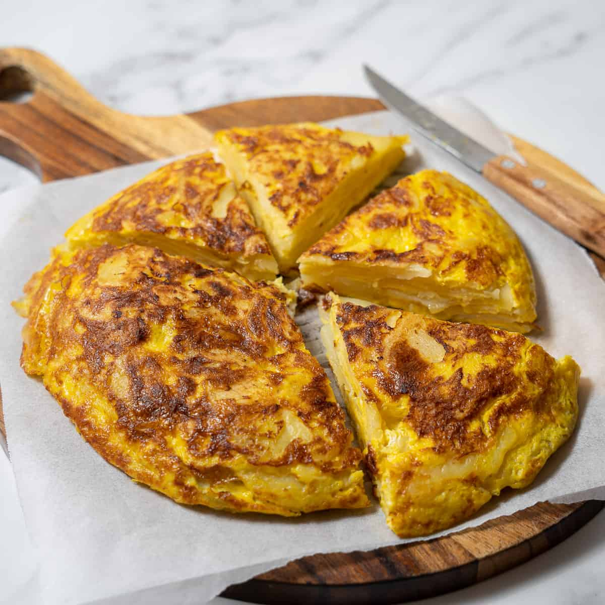

Spanish Omelette

Description
A Spanish omelette, also known as a Spanish tortilla or tortilla española, is a classic Spanish dish made with eggs, potatoes, onions, and sometimes additional ingredients like bell peppers or chorizo.
Ingredients
- Eggs.
- Irish Potatoes.
- An Onion.
- Salt and Pepper, to taste.
- Olive Oil.
- chorizo.
Steps
- Peel the potatoes and slice them into thin rounds, about 1/8 inch thick.
- Peel and thinly slice the onion.
- Heat the olive oil in a non-stick skillet over medium heat. The oil should be enough to generously cover the bottom of the pan.
- Add the potato and onion slices to the skillet, ensuring they are submerged in the oil.
- Cook the potatoes and onions slowly and gently, stirring occasionally to prevent sticking. Cook until the potatoes are tender but not browned, about 15-20 minutes.
- You can add your cooked chorizo during the last few minutes of cooking the potatoes and onions.
- Remove the potatoes, onions, and the chorizo from the skillet and drain them in a colander or on paper towels.
- Season the mixture with salt and pepper to taste.
- In a separate bowl, whisk the eggs together until well beaten.
- Add the drained, onion and chorizo mixture to the beaten eggs. Gently stir to combine, ensuring the potatoes are evenly coated.
- Heat a clean, non-stick skillet over medium heat and add a tablespoon of olive oil.
- Pour the egg and potato mixture into the skillet and spread it out evenly.
- Cook the omelette slowly until the edges start to set and the bottom is lightly browned. Use a spatula to lift the edges occasionally to check the color.
- Now, the tricky part: flipping the omelette. Place a plate larger than the skillet over the top of the skillet, then invert the skillet so the omelette is on the plate. Carefully slide the omelette back into the skillet, uncooked side down.
- Continue cooking until the omelette is cooked through but still slightly runny on the inside, or to your desired level of doneness. You can cut a small slit in the center to check. Traditionally, Spanish omelettes are a cook through in the center.
- Slide the Spanish omelette onto a plate, let it cool slightly, then cut it into wedges or squares. It's delicious served warm or at room temperature.